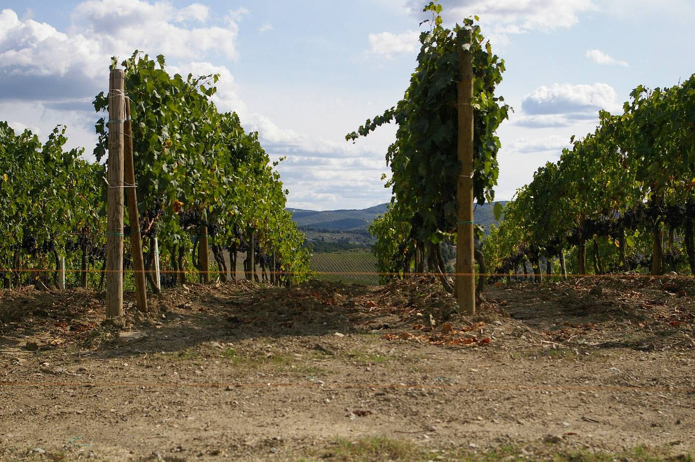

Наша история
EasyItaly — вкус Италии, открытый миру.
Из Тосканы — на международные рынки
EasyItaly была основана в 2019 году в самом сердце Тосканы — региона, который по праву считается одной из гастрономических жемчужин Италии, известного своими кулинарными традициями, высоким качеством продуктов и культурой вкуса.
С самого начала нашей миссией стало знакомство международного рынка с лучшими продуктами итальянского производства. Мы начали с поставок продуктов питания в страны Азии и СНГ, объединяя производителей Италии с партнёрами и потребителями по всему миру.
Благодаря глубокому знанию итальянского рынка, надёжным партнёрским отношениям и стремлению к совершенству EasyItaly постепенно выросла в международную дистрибьюторскую компанию.
Сегодня EasyItaly представляет и дистрибутирует продукцию известных итальянских брендов в различных странах мира, помогая им расширять своё присутствие на международных рынках.
Мы гордимся своими итальянскими корнями, ценим традиции и верим, что настоящее качество не нуждается в границах.
EasyItaly — соединяем Италию с миром через качество, традиции и вкус.

Путь компании
2019 — основание в Тоскане
Компания создана в одной из гастрономических столиц Италии с фокусом на экспортные поставки.
Первые поставки — Азия и СНГ
Первые проекты поставок продуктов питания на рынки Азии и СНГ. Практические знания требований к импорту и сертификации.
Рост в международного дистрибьютора
Надёжное партнёрство и знание рынков позволяют нарастить портфель продуктов и географию поставок.
Сегодня — бренды Италии по всему миру
EasyItaly представляет и дистрибутирует продукцию известных итальянских брендов, помогая им расти на международных рынках.
Во что мы верим
Качество без границ
Мы верим, что настоящее качество не нуждается в границах. Каждый продукт в портфеле — проверенный.
Традиции и вкус
Бережём кулинарные традиции итальянских регионов и передаём их новым рынкам.
Долгосрочное партнёрство
Строим отношения, в которых растут и производитель, и импортёр.
Профессионализм в деталях
От экспортной документации до маркировки паллет — внимание к деталям на каждом шаге.
Соединяем Италию с вашим рынком
История продолжается — и ваш бренд или ваш рынок могут стать её частью.
Стать партнёром